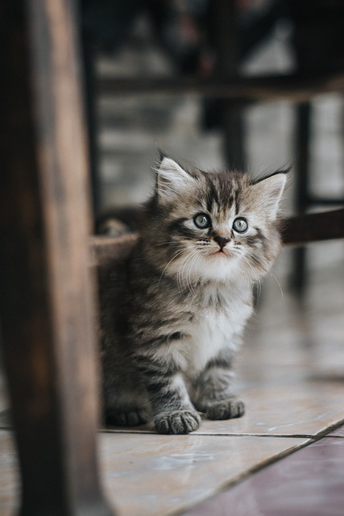

Las mascotas son en algunas ocasiones nuestros mejores compañeros ven y cuidalos con nosotros

Explora Nuestros Valores y Compromiso ¡Bienvenido a nuestra clínica veterinaria! Sumérgete en un entorno donde cada acción nos acerca a proporcionar el mejor cuidado para tu mascota. Descubre lo que nos motiva a ofrecer servicios excepcionales y a mejorar continuamente para ti y tu amigo peludo.
Ver másDescubre tratamientos especializados y consulta con nuestros expertos. Explora opciones personalizadas para el cuidado de tu mascota y recibe orientación profesional para mantener a tu amigo peludo saludable y feliz.
Ver más